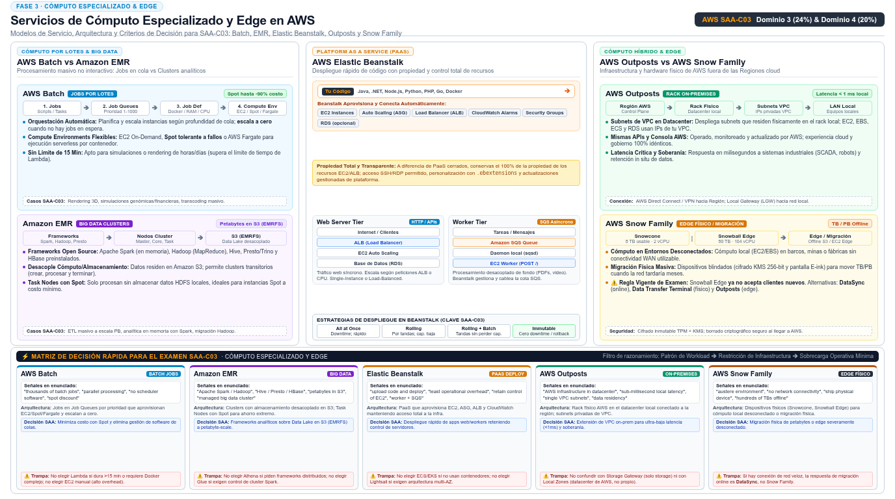

Otros servicios de cómputo Batch, EMR, Beanstalk, Outposts y Snow
Cinco servicios especializados que aparecen como respuesta correcta cuando el enunciado sale del patrón "servidor web + base de datos": jobs por lotes, big data, PaaS, cómputo híbrido y migración física.
No todo workload es una API con tráfico variable. Hay jobs que corren miles de veces al día, clusters que digieren petabytes con Spark, equipos que solo quieren subir código y verlo desplegado, fábricas que necesitan latencia de milisegundos contra máquinas locales, y datasets de cientos de terabytes que nacen on-premises. Para cada uno de esos nichos AWS tiene un servicio especializado: AWS Batch (jobs por lotes), Amazon EMR (big data), AWS Elastic Beanstalk (PaaS de despliegue), AWS Outposts (AWS dentro de tu datacenter) y la AWS Snow Family (migración y cómputo en el edge con dispositivos físicos).
La estrategia de estudio para esta página es distinta a la de EC2: aquí no hay decenas de cifras que memorizar, sino señales de enunciado que mapean a un solo servicio. La pregunta casi nunca es "¿cómo configuras Batch?" sino "¿cuál de estos cinco —o de Lambda, ECS o EC2— resuelve este escenario con least operational overhead?". La tabla de decisión al final de la página resume ese mapeo; el resto de la página te da el contexto de cada servicio para que la tabla tenga sentido.
AWS Batch: jobs por lotes sin gestionar la orquestación
AWS Batch ejecuta batch computing a cualquier escala: trabajos largos, repetitivos o masivamente paralelos (rendering, simulaciones científicas, procesamiento de archivos) que se envían como jobs a job queues. Su propuesta de valor oficial: elimina el undifferentiated heavy lifting — no instalas ni gestionas software de orquestación de jobs ni capacidad; Batch aprovisiona los recursos de cómputo automáticamente en respuesta a los jobs enviados y optimiza la distribución del workload, eliminando cuellos de capacidad y reduciendo costos. Es la respuesta cuando el enunciado habla de "run thousands of batch jobs / parallel processing without managing infrastructure": ni EC2 a mano (overhead), ni Lambda si los jobs exceden 15 minutos o necesitan entornos pesados — Batch (que además puede ejecutar los jobs como contenedores) combina con Spot para costo mínimo.
Como Batch comparte escenario con Lambda y Fargate en muchas preguntas, conviene fijar la frontera con una comparación directa antes de seguir. Los tres ejecutan "trabajo que corre y termina"; lo que cambia es la duración, el disparador y la gestión. El filtro de las tres preguntas: ¿cuánto dura un job, qué lo dispara y quién prepara el entorno de ejecución? Con esas respuestas, la tabla siguiente te da el servicio correcto sin dudar.
| Criterio | AWS Lambda | AWS Batch | ECS/Fargate tasks |
|---|---|---|---|
| Duración típica | Segundos a 15 minutos máximo | Minutos a horas, sin tope por job | Indefinida o por tarea |
| Disparador | Eventos (S3, SQS, API Gateway) | Jobs enviados a job queues | Scheduler del service o tarea manual |
| Entorno de ejecución | Runtimes gestionados por Lambda | Contenedores que tú defines | Contenedores que tú defines |
| Elegir cuando | Evento corto, escala instantánea, cero infra | Miles de jobs en cola, prioridades, dependencias | Servicio de larga vida o jobs con imagen propia |
Amazon EMR: clusters de big data gestionados
Amazon EMR (antes Elastic MapReduce) es la plataforma de clusters gestionada para frameworks de big data — Apache Hadoop y Apache Spark sobre todo — con los que procesas y analizas enormes volúmenes de datos, y transformas y mueves datos hacia y desde almacenes como S3 y DynamoDB. La palabra clave del examen es "framework": si el enunciado menciona Spark, Hadoop, HBase o pipelines de ETL/analítica a gran escala, EMR aparece como la respuesta gestionada frente a montar el cluster tú mismo en EC2 (que es el distractor clásico, porque te deja la operación del framework encima). EMR también escala el cluster y gestiona el ciclo de vida de los nodos; el costo se optimiza con instancias Spot para task nodes o con precios por lotes según el patrón de uso. Como pista complementaria, recuerda con qué se habla de EMR: datasets en S3 procesados con Spark a petabyte-scale y resultados que vuelven a S3 o alimentan un data warehouse.
AWS Elastic Beanstalk: el PaaS del despliegue
Elastic Beanstalk es la capa de Platform as a Service: subes tu código (Java, .NET, PHP, Python, Node, Docker, entre otras plataformas soportadas) y el servicio provisiona las instancias EC2, configura el load balancing, monta el health monitoring y escala dinámicamente el environment. El detalle que lo distingue de otros PaaS y que el examen explota: tú sigues siendo dueño de los recursos subyacentes — puedes ver y tocar las instancias, security groups y auto scaling que Beanstalk creó, e incluso tomarlos por tu cuenta si más adelante lo necesitas. Ofrece dos sabores de environment: web server (recibir tráfico HTTP detrás de un load balancer) y worker (consumir mensajes de una cola SQS para tareas asíncronas o de larga duración, con la cola creada y cableada por el propio servicio). Señal de enunciado: "deploy a web application without managing infrastructure but retaining full control of the EC2 instances" → Beanstalk, no ECS ni Lambda; y si dice "asynchronously process jobs from a queue" → un worker environment, no una Lambda por mensaje.
AWS Outposts: la región extendida a tu edificio
AWS Outposts lleva la infraestructura, servicios, APIs y herramientas de AWS a las instalaciones del cliente: un pool de cómputo y almacenamiento AWS que se despliega físicamente en tu sitio y que AWS opera, monitorea y gestiona como parte de una región AWS. El truco arquitectónico que lo hace elegante: creas subnets de tu VPC que viven en el Outpost, y las instancias EC2, volúmenes EBS, clusters ECS o instancias RDS creadas ahí se direccionan con IPs privadas dentro del mismo VPC, como cualquier otra subnet — solo que con latencia local. Los casos de uso son los de ley: low-latency frente a sistemas on-premises (industrial, trading, fábrica), procesamiento local de datos por regulación que impide que salgan del edificio, y migraciones graduales con un modelo operativo único. Señal de enunciado: "AWS experience and APIs on-premises / same VPC / low latency to local systems" → Outposts — nunca "más instancias EC2 en tu datacenter", que es el distractor manual.
capacidad AWS gestionada"] subgraph VPC["VPC de la región"] SUB["Subnet del Outpost
IPs privadas del VPC"] RSC["EC2 · EBS · ECS · RDS"] end end REG["Región AWS padre
opera y gestiona el Outpost"] LOCAL["Sistemas locales
latencia de milisegundos"] OUT --> SUB SUB --> RSC REG -.->|"gestión y APIs"| OUT RSC -- "LAN local" --> LOCAL classDef navy fill:#EFF6FF,stroke:#3B82F6,stroke-width:2px,color:#1E293B classDef green fill:#F0FDF4,stroke:#10B981,stroke-width:2px,color:#1E293B classDef amber fill:#FFF7ED,stroke:#F59E0B,stroke-width:2px,color:#1E293B class OUT,SUB navy class RSC,REG green class LOCAL amber
AWS Snow Family: cómputo y migración en el borde físico
La Snow Family son dispositivos físicos de AWS para trabajar donde la red no llega: transferir cientos de terabytes o ejecutar cómputo en el edge (vehículos, barcos, minas, fábricas sin conectividad estable). Snow es el doble agente de esta historia: además de cómputo en el edge, es el servicio de migración física de datos — el dispositivo llega a tu datacenter, cargas los datos, se devuelve a AWS y se importan a S3 (y a la inversa para exportaciones). Ese papel de "migración" lo comparte con DataSync y la familia de transferencias, y cae con más fuerza en las preguntas del dominio de migración y D2/D4. Nota de vigencia importante tomada de la documentación oficial: Snowball Edge ya no está disponible para clientes nuevos, que son dirigidos a AWS DataSync para transferencias online, AWS Data Transfer Terminal para transferencias físicas seguras de alta velocidad, y AWS Outposts para cómputo en el edge — memorízalo porque convierte a "Snowball Edge" en distractor y a las tres alternativas en respuesta correcta en escenarios nuevos.

sqsd, junto con sus políticas de despliegue). El bloque superior derecho compara AWS Outposts (rack físico en el datacenter local donde subnets de la VPC residen on-premises para latencia sub-milisegundo a PLCs y sistemas legacy bajo un plano de control unificado operado por la Región padre) con la AWS Snow Family (dispositivos físicos Snowcone y Snowball Edge para cómputo edge en entornos severamente desconectados y transferencia física masiva de datos; recordando que Snowball Edge ya no acepta clientes nuevos, recomendando DataSync, Data Transfer Terminal y Outposts). El panel inferior sintetiza la Matriz de Decisión Rápida para SAA-C03 con las señales textuales clave del examen, el rol arquitectónico y los distractores o trampas comunes a evitar.| Servicio | Qué resuelve | Señal en el enunciado | Cuándo NO es la respuesta |
|---|---|---|---|
| AWS Batch | Jobs por lotes a cualquier escala, con colas y aprovisionamiento automático | "Thousands of jobs", "parallel batch processing", "no batch software to manage" | Eventos cortos y aislados → Lambda; servicios de larga vida → ECS. |
| Amazon EMR | Clusters gestionados de Hadoop/Spark y frameworks de big data | "Spark jobs", "process petabytes", "big data framework on managed clusters" | SQL analítico sobre data lake → Athena/Redshift; ETL simple → Glue. |
| Elastic Beanstalk | Deploy de apps web sin gestionar infra, conservando la propiedad de los recursos | "Upload code and deploy", "web + worker environments", "control the underlying EC2" | Contenedores como unidad → ECS/EKS; eventos → Lambda. |
| AWS Outposts | AWS gestionado dentro del datacenter del cliente, dentro de tu VPC | "On-premises with AWS APIs", "ultra-low latency to local systems", "local data processing" | Solo almacenamiento híbrido → Storage Gateway; migración online → DataSync. |
| Snow Family | Transferencia física masiva + cómputo en el edge sin red | "No connectivity", "hundreds of TB", "one-time migration"; clientes nuevos → DataSync / Data Transfer Terminal / Outposts | Transferencia online continua → DataSync; migración de apps → AWS MGN. |
- Batch: jobs + job queues; aprovisiona cómputo automáticamente — el gestor de "trabajo que corre y termina".
- EMR: clusters gestionados para Hadoop/Spark y big data; mueve datos hacia/desde S3 y DynamoDB.
- Beanstalk: PaaS con web server y worker (SQS) environments; tú conservas el control de los recursos EC2.
- Outposts: capacidad AWS on-premises gestionada como parte de una región; subnets del propio VPC con IPs privadas.
- Snow: es a la vez migración física y cómputo en el edge — doble papel que comparte con la página de migración.
- Snowball Edge no acepta clientes nuevos: las respuestas vigentes son DataSync (online), Data Transfer Terminal (físico) y Outposts (edge).
- Ante "least operational overhead" con restricción física, la especialización gana a EC2 manual.
- CMP-21 AWS Batch — What is AWS Batch (jobs, queues) · docs.aws.amazon.com/batch/latest/userguide/what-is-batch.html
- CMP-22 AWS Elastic Beanstalk — Welcome (PaaS deployment) · docs.aws.amazon.com/elasticbeanstalk/latest/dg/Welcome.html
- CMP-23 Amazon EMR — What is Amazon EMR (big data clusters) · docs.aws.amazon.com/emr/latest/ManagementGuide/emr-what-is-emr.html
- CMP-24 AWS Outposts — What is AWS Outposts (hybrid compute) · docs.aws.amazon.com/outposts/latest/userguide/what-is-outposts.html
- CMP-25 AWS Snow Family — What is Snowball Edge (edge + migración) · docs.aws.amazon.com/snowball/latest/developer-guide/whatis-snowball.html